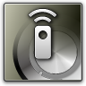

Wichtig: Damit Cascable sich mit Ihrer WLAN-fähigen Sony-Kamera verbinden kann, soll auf der Kamera die

Smart Remote Control
App installiert sein.
Um die Smart Remote Control App auf Ihre Kamera zu installieren und eine Verbindung zu Cascable herzustellen müssen Sie noch einige Schritte durchführen, wie in der nachfolgenden Anleitung beschrieben.
Bevor wir loslegen
- Prüfen Sie, ob Ihre Kamera von Cascable unterstützt wird.
- Prüfen Sie, ob die Firmware Ihrer Kamera auf dem neuesten Stand ist.
- Prüfen Sie, ob die Smart Remote Control App auf Ihrer Kamera installiert ist und aktualisieren Sie diese bei Bedarf.
- Prüfen Sie, ob Sie die neueste Version von Cascable haben.
Firmware-Version Ihrer Kamera prüfen
Bevor Sie Ihre Kamera mit Cascable verbinden, sollten Sie überprüfen, ob die Firmware Ihrer Kamera auf dem neuesten Stand ist.
Um die Firmware-Version der Kamera anzuzeigen, wählen Sie Version aus dem  Toolbox Menü.
Toolbox Menü.
Öffnen Sie die Support-Webseite von Sony und geben Sie die Modellnummer Ihrer Kamera ein. Auf der Produktseite werden Sie die aktuelle Firmware für Ihre Kamera herunterladen können.
Smart Remote Control installieren
Hinweis: Um PlayMemories Camera Apps herunterzuladen, benötigen Sie ein Benutzerkonto bei Sony.
Damit Cascable Daten mit Ihrer Kamera austauschen kann, müssen Sie Sony Smart Remote Control App auf die Kamera installieren.
- Drücken Sie Menu und wechseln Sie zu Anwendungen > Liste der Anwendungen > PlayMemories Camera-Anwendungen.
- Ihre Kamera wird nach einem WLAN-Netzwerk suchen. Besteht noch keine Verbindung, so werden Sie gebeten, sich mit einem drahtlosen Zugangspunkt zu verbinden.
- Wenn sich PlayMemories Camera Apps öffnet, wählen und installieren Sie die Smart Remote Control App.
Smart Remote Control-Version prüfen
Falls Smart Remote Control bereits auf Ihrer Kamera installiert ist, prüfen Sie, ob sie ggf. aktualisiert werden muss.
- Drücken Sie Menu und wechseln Sie zu Anwendungen > Liste der Anwendungen > PlayMemories Camera-Anwendungen.
- Ihre Kamera wird nach einem WLAN-Netzwerk suchen. Besteht noch keine Verbindung, so werden Sie gebeten, sich mit einem drahtlosen Zugangspunkt zu verbinden.
- Wenn sich PlayMemories Camera Apps öffnet, wechseln Sie in den Reiter My APP, wählen Sie die Smart Remote Control App und prüfen Sie, ob die installierte Version aktuell ist.
Cascable mit Ihrer Kamera verbinden
- Drücken Sie Menu und wechseln Sie zu Anwendungen > Liste der Anwendungen > Smart Remote Control.
- Wenn Smart Remote Control startet, drücken Sie
 Delete um eine passwortgeschützte Verbindung herzustellen.
Delete um eine passwortgeschützte Verbindung herzustellen.
- Öffnen Sie auf Ihrem iOS-Gerät Einstellungen > WLAN, wählen Sie Ihr WLAN-Netzwerk aus und geben Sie das Passwort ein, das auf dem Bildschirm Ihrer Kamera angezeigt wird.
- Auf dem Kameradisplay wird die Meldung Verbinden … angezeigt.
- Starten Sie Cascable auf Ihrem iOS-Gerät. Die App wird Ihre Kamera automatisch erkennen und eine Verbindung herstellen.
Immer noch Probleme?
Wenn es immer noch nicht funktioniert, gehen Sie bitte auf die Cascable Webseite, damit wir Ihnen weiterhelfen können.